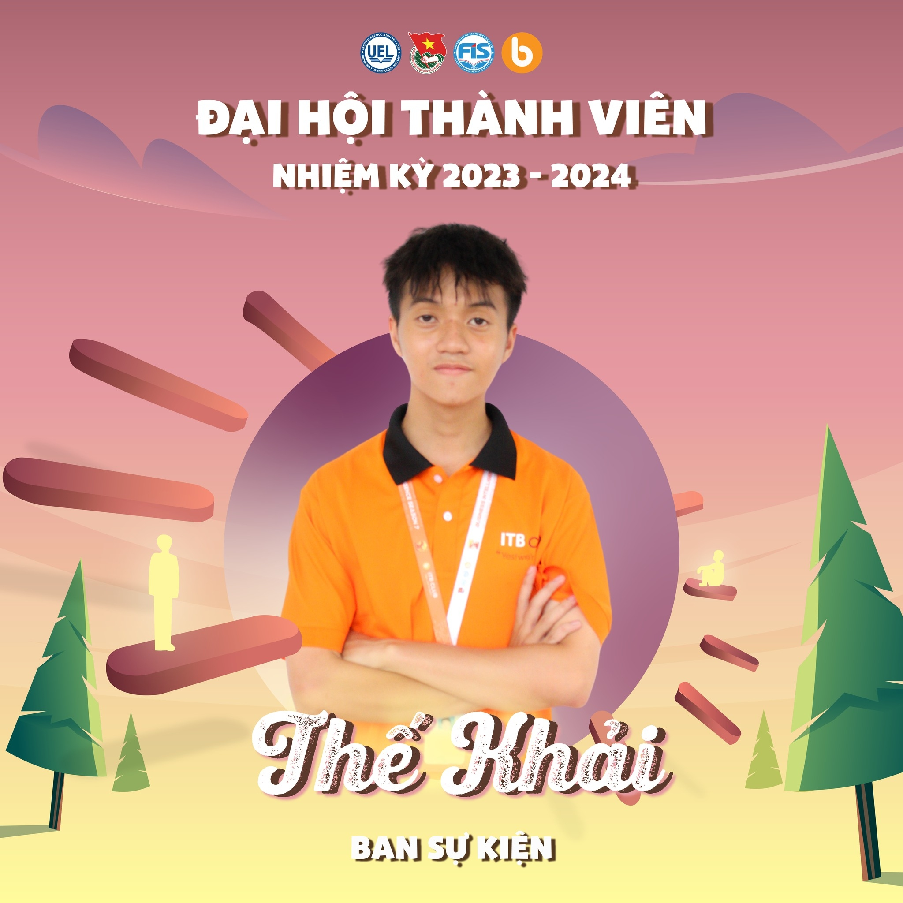

Data Engineering Intern passionate about real-time streaming, automated data collection, and cloud-native architectures.
I am a Data Engineering Intern with a focus on building robust, idempotent data pipelines. My expertise lies in orchestrating complex workflows using Airflow, transforming raw data with dbt, and managing real-time streams via Kafka and Spark.
I enjoy solving the "deceptively simple" problems of data engineering, from handling late-arriving data to bypassing anti-bot mechanisms in high-scale crawlers.
High-throughput streaming architecture processing ~50k events/sec with <2s end-to-end latency. Ingests user events from Eventsim, processes via Spark, and stores in BigQuery for real-time analysis.
Production-ready crawler extracting 100k+ job listings from 5+ sources (TopCV, etc.) with 99.9% data integrity. Features intelligent pagination, rate-limiting, and schema-driven ingestion.